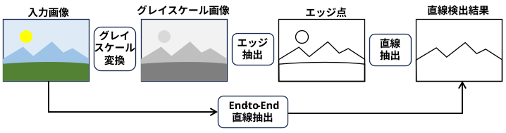
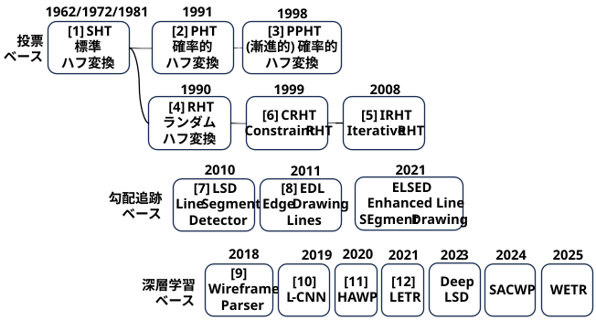
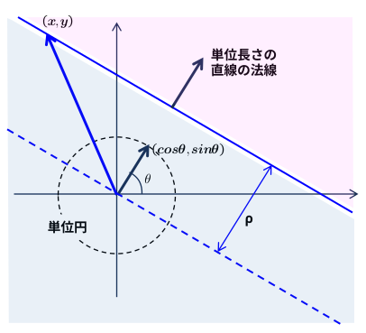
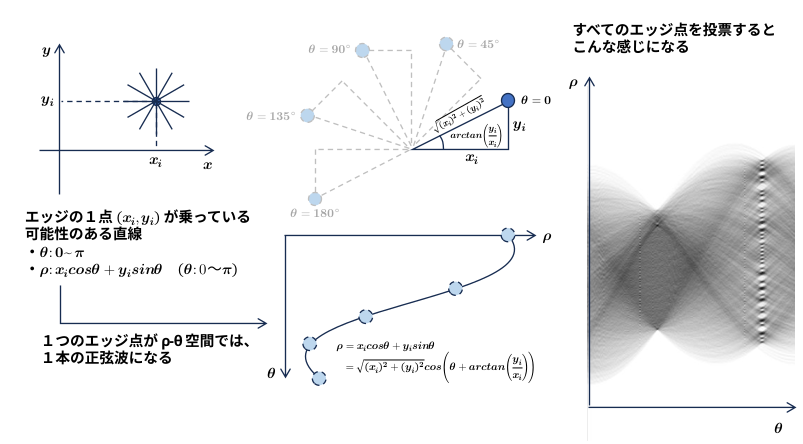
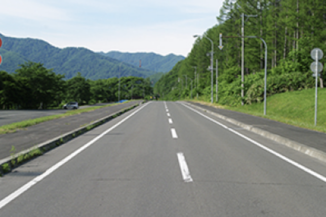
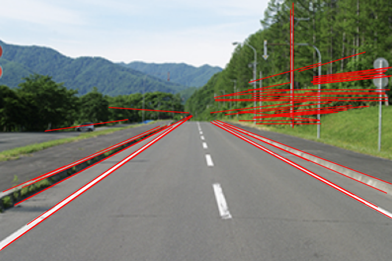
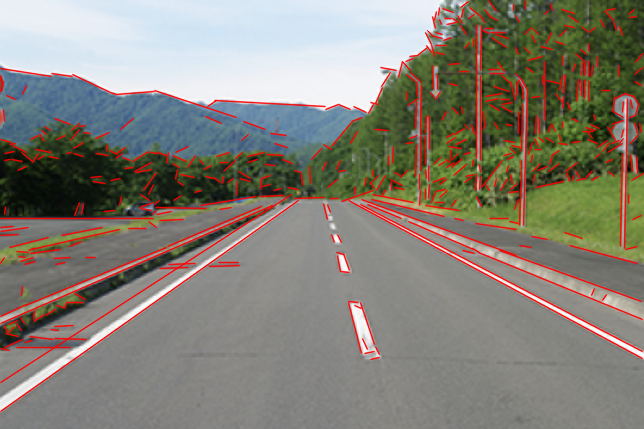
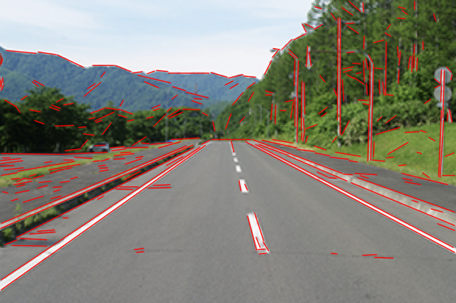

画像内から直線（または線分）の形状を持つ部分を見つけ出し、その位置や傾きを特定する画像処理の基本タスク。
前処理 (グレイスケール変換、エッジ抽出) が必要な手法と、End-to-End で直線を検出する手法とがある。

アプローチを大別すると以下の 3 つに分類できる \[ \begin{array}{l | l | l | l } \textbf{アプローチ} & \textbf{代表的な手法} & \textbf{メリット} & \textbf{デメリット}\\ \hline \text{投票ベース} & \text{ハフ変換} & \text{断続的な線やノイズに強い} & \text{閾値調整が難しい。計算量が多い} \\ \hline \text{勾配追跡ベース} & \text{LSD, EDLines} & \text{高速、調整不要。誤検出が少ない} & \text{テクスチャが複雑な場所で}\\ &&&\text{線が細切れになる} \\ \hline \text{深層学習ベース} & \text{L-CNN,HAWP,LETR} & \text{背景が複雑でも「意味のある直線」} & \text{GPUが必要。学習データに依存する}\\ &&\text{を捉える}\\ \end{array} \]

[1] 『Method and Means for Recognizing Complex Patterns』 (1962) 傾き, y-切片で投票
『Use of the Hough Transformation to Detect Lines and Curves in Pictures』(1972) ρ-θ空間で投票
『Generalizing the Hough Transform to Detect Arbitrary Shapes』(1981) 任意形状への拡張
[2] 『Probabilistic Hough Transform 』(1991)
[3] 『Progressive Probabilistic Hough Transform for Line Detection』(1998)
[4] 『Randomized Hough Transform』(1990)
[5] 『Detection of incomplete ellipse in images with strong noise by iterative randomized Hough transform (IRHT)』(2008)
[6] 『https://faculty.washington.edu/cfolson/papers/pdf/cviu99.pdf』(1999)
[7] 『LSD: A Fast Line Segment Detector with a False Detection Control』 (IEEE TPAMI 2010)
IPOL Journal にも公開されている 『LSD: a Line Segment Detector』 (2012)
[8] 『EDLines: A real-time line segment detector with a false detection control』 (Pattern Recognition Letters 2011)
[9] 『Learning to Parse Wireframes in Images of Man-Made Environments』 (CVPR 2018)
[10] 『End-to-End Wireframe Parsing』 (ICCV 2019)
(愛称) L-CNN: Line Convolutional Neural Network
[11] 『Holistically-Attracted Wireframe Parsing』 (CVPR 2020)
[12] 『Line Segment Detection Using Transformers without Edges』 (CVPR 2021)
(愛称) LETR: LinE segment TRansformer
アルゴリズムの詳細は Hough Transform （今後作成予定） 参照
一つ一つのエッジ点に対して、図形のパラメータ空間で投票を行い、得票数が閾値を超えたパラメータの図形を検出したと判定する。
・直線：直線と原点の距離 ρ、直線の法線とx軸のなす角 θ の 2 次元
・円： 中心点座標(cx,cy)、半径 r の 3 次元
・楕円： 中心座標(cx,cy)、長軸の長さ a、短軸の長さ b、傾き θ の 5 次元
直線のパラメータとして、当初は傾きと y- 切片が提案されたが、その後、ρ-θ が使われるようになった。
"Hough は、よく知られた「傾き」と「切片」をパラメータとして採用したため、彼のパラメータ空間は傾きと切片を軸とする2次元平面となりました。しかし残念なことに、傾きと切片はいずれも値の範囲に制限がない（非有界である）ため、この手法を適用する上で問題が生じます。”
『Use of the Hough Transformation to Detect Lines and Curves in Pictures』(1972)
直線の ρ-θ 表現
・直線の法線と、\(x\) 軸のなす角を \(θ\) とすると、単位長さの法線は \((\cos\theta,\sin\theta)\)
・直線上の点 \((x,y)\) と単位長さの法線の内積は
\[
x\cos\theta+y\sin\theta=\rho
\]
となる。直線上にない点の場合
\[
x\cos\theta+y\sin\theta \gt \rho \quad \text{ピンクの領域}
\]
\[
x\cos\theta+y\sin\theta \lt \rho \quad \text{青, 水色の領域}
\]
となる。

ρ-θ表現を使うと
・θ：0～π
・ρ：0～画像サイズ程度
と有界になる。
投票のイメージ

すべての点ではなく、ランダムにサンプリングしたエッジ点のみを使って投票を行うことで計算量を大幅に削減する。
直線が確定すると、その直線上にあるエッジ画素を実際に探索して始点、終点を検出する。
任意に選んだエッジ点 2 点から直線のパラメータを直接計算して投票することで、さらに効率化を図ったもの。
アルゴリズムの詳細は別途作成予定...
ハフ変換のように画像全体のエッジ点で投票するのではなく、画素の「輝度勾配（向きと強さ）」を局所的に解析して直線を繋ぎ合わせていく。
・パラメータ調整がほぼ不要で、誤検出が少ない。
画素の勾配方向が揃っている領域（Line Support Region）をグループ化し、長方形として近似する。
「ヘルムホルツの原理」という統計的な仮定（偽陽性制御）を導入し、境界条件（閾値）を人間が調整しなくても、誤検出（ノイズ）を極限まで抑えて正確な線分を検出できる。
曲線の一部も線分として検出できるため、円検出でも利用されることがある。
(線分が円周の一部ならば、垂直二等分線が円の中心で交わるはず･･･)
「Edge Drawing」という手法でクリーンなエッジのアンカー（固定点）を抽出し、それらを直線セグメントとして繋ぎ合わせる。
LSDと同等以上の精度を持ちながら、LSDよりも数倍高速に動作する。
ノイズや障害物（オクルージョン）、複雑な背景に影響されない深層学習ベースの直線・線分検出（Wireframe Parser）が主流になっている。
畳み込みニューラルネットワーク（CNN）を使い、画像から「直線の端点（Junction）」と「それらを結ぶ線分」を同時に予測し、建物などのワイヤーフレーム構造を丸ごと検出する手法の先駆けとなった。
Wireframe Parserを発展させ、エンドツーエンドで高速・高精度に線分構造を検出するネットワーク。LoI (Line of Interest) プーリングという技術を使い、直線の候補を効率よく精緻化する。
画素から最も近い線分への「引力（アトラクションフィールド）」を定義し、画像全体のジオメトリを捉えることで、幾何学的に破綻のない美しい線分群を検出する。
物体検出で成果を上げた「DETR」の仕組みを線分検出に応用（Line Segment Detection with Transformers）したもの。
画像内の長距離の依存関係を捉えられるため、途切れがちな長い直線も1本として綺麗に検出できる。
PHT、LSD、EDLines は OpenCV を使って簡単に試すことができる。

(data/task_line_detect/src/line_detect_by_PHT.py)
# 画像読み込み → グレースケール化
img = cv2.imread(argv[1])
gray = cv2.cvtColor(img, cv2.COLOR_BGR2GRAY)
# エッジ検出
edges = cv2.Canny(gray, 50, 150, apertureSize=3)
# 確率的ハフ変換（PHT）による直線検出
# パラメータ: (画像, 距離解像度, 角度解像度, 閾値, 最小線長, 最大線隙間)
lines = cv2.HoughLinesP(edges, rho=1, theta=np.pi/180, threshold=100, minLineLength=100, maxLineGap=10)
# 検出した直線を元の画像に描画
if lines is not None:
for line in lines:
x1, y1, x2, y2 = line[0]
# 赤色（BGR: 0, 0, 255）で線を描画
cv2.line(img, (x1, y1), (x2, y2), (0, 0, 255), 1, cv2.LINE_AA)

パラメータをちょっといじってみたが、センターラインがうまく検出されず･･･
(data/task_line_detect/src/line_detect_by_LSD.py)
# 画像読み込み → グレースケール化
img = cv2.imread (argv[1])
gray = cv2.cvtColor(img, cv2.COLOR_BGR2GRAY)
# LSDオブジェクト作成～線分検出
lsd = cv2.createLineSegmentDetector(0)
lines = lsd.detect(gray)[0]
# 検出した線分を元の画像に描画
for l in lines:
x0 = int(l[0][0])
y0 = int(l[0][1])
x1 = int(l[0][2])
y1 = int(l[0][3])
# 赤色（BGR: 0, 0, 255）で線を描画
cv2.line(img, (x0, y0), (x1, y1), ( 0, 0, 255), 1, cv2.LINE_AA)

(data/task_line_detect/src/line_detect_by_EDLines.py)
cv2 contrib モジュールのため
pip install opencv-contrib-python
する必要あり
# 画像読み込み → グレースケール化
img = cv2.imread(argv[1])
gray = cv2.cvtColor(img, cv2.COLOR_BGR2GRAY)
# Edge Drawing (ED) オブジェクトの作成
ed = cv2.ximgproc.createEdgeDrawing()
# パラメータのカスタマイズ
# 構造体を新しく作らず、ed.params の値を直接書き換えます
ed.Params.EdgeDetectionOperator = cv2.ximgproc.EdgeDrawing_PREWITT # 勾配算子 (デフォルトは PREWITT)
ed.Params.GradientThresholdValue = 20 # アンカーポイント選定の閾値
ed.Params.EdgeArgument = 11 # 勾配の閾値
ed.Params.MinPathLength = 10 # 最低限必要なエッジの長さ
# エッジと直線の検出
ed.detectEdges(gray)
lines = ed.detectLines()
# 検出された直線を元の画像に描画
# detectLines() の戻り値は [[[x1, y1, x2, y2]], [[x1, y1, x2, y2]], ...] という形状の配列
output_img = img.copy()
if lines is not None:
for line in lines:
# 座標データを取得
x1, y1, x2, y2 = line[0].astype(int)
# 赤色（BGR: 0, 0, 255）で線を描画
cv2.line(output_img, (x1, y1), (x2, y2), (0, 0, 255), 1, cv2.LINE_AA)

End-to-End Wireframe Parsing
(動作未確認)
Holistically-Attracted Wireframe Parsing: From Supervised Learning to Self-Supervised Learning
(動作未確認)
LETR: Line Segment Detection Using Transformers without Edges
(動作未確認)